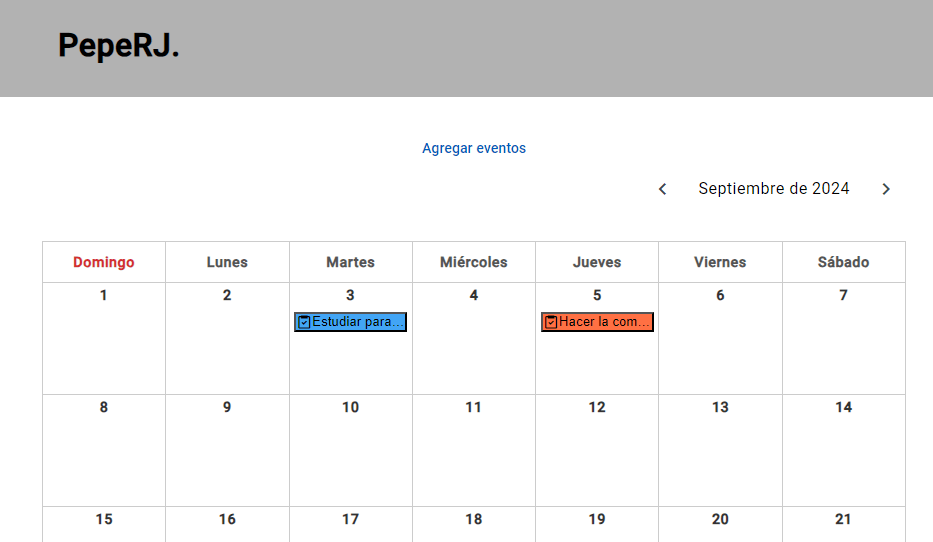

Calendario
Calendario web creado con la libreria de React, en la que hemos utilizado HTML, CSS y TypeScript para la lógica del front
Calendario web creado con la libreria de React, en la que hemos utilizado HTML, CSS y TypeScript para la lógica del front
App de tareas creado con el framework de Angular utilizando HTML, SCSS y TypeScript. Utilizamos los pipe de Angular para filtrar las tareas según nos convenga
Sitio web creaado con el framework de Angular. Utilizamos una API externa para traer los datos a nuestro front practicando las llamadas HTTP con los servicios de Angular